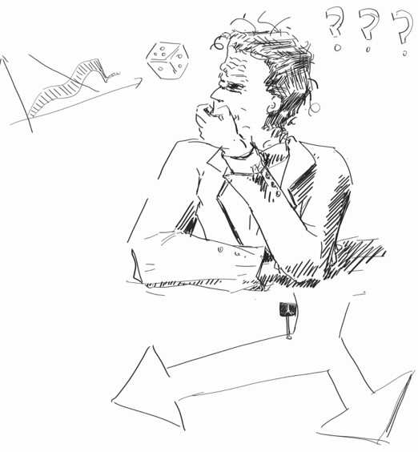
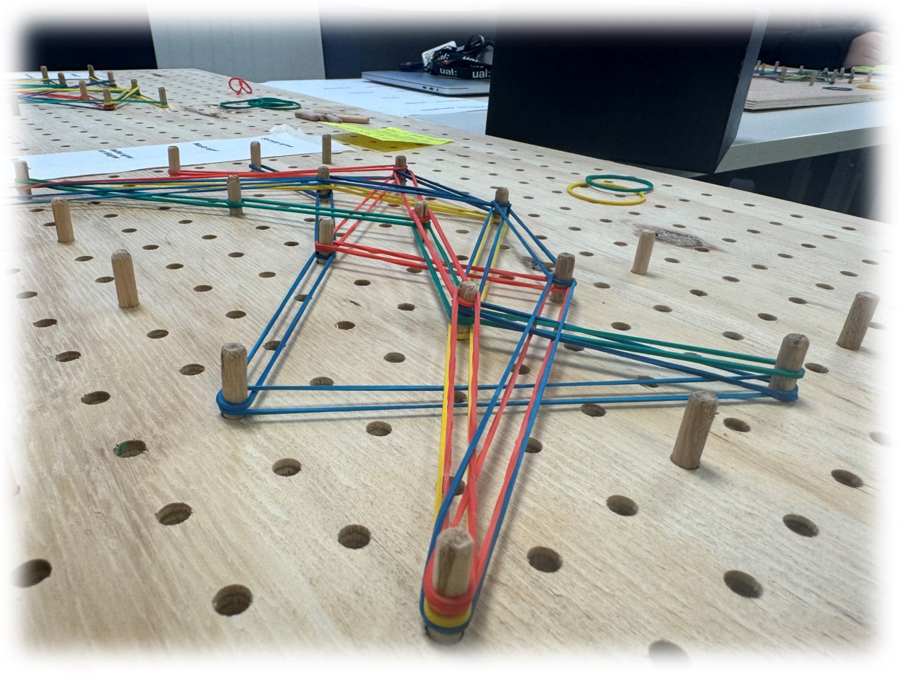
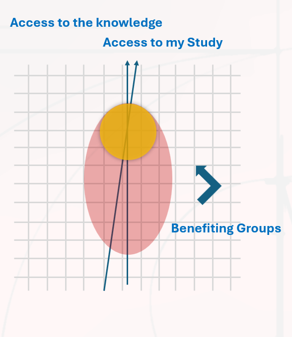

Visualize the Complexity of Everyday Decisions
This is the proposal of my Final Major Project for the Master Degree. Currently it is my personal project, but please feel free to contact me if you have interest. interactive prototype
Introduction: Complexity in Daily Decision Making

Information technology continues to provide opportunities to alter the decision-making behavior of individuals.[1] When people have gigabytes of data accessed at their fingertips, many researches and studies negatively shows that it s harder for people to make rational decisions.[2] A research conducted by Barclays Plan & Invest in partnership with researchers at UCL reveals that Brits spend a staggering 148 minutes each day deliberating over everyday decisions - from what to wear or eat, what to watch on TV or how to tackle their to-do list. [3]

Despite the ubiquity of visualizations in research and practice, there is no comprehensive understanding of the potential and limits of information visualization for decision-making, where its ability to improve decision accuracy and quality has been overwhelmingly confirmed. [4]

Therefore, I want to try develop a systematic method of data visualization as a skill or a tool to help people estimate the complexity of decisions they encounter in daily lives.
Audience and Outcome

Describe the data visualization method I am looking for from two perspectives:
- This project focus on the application of data visualization method in everyday situations.
- The data of complexity itself stands as the topic in the data visualization output, which is established for the audience to explore the micro narrative in their everyday life.

I will conduct secondary research, questionnaire, interview and cognitive mapping research to get enough knowledge to organize the design methodology steps by steps:
- Decide on a certain scenario that fits the theme and is convenient for me to practice designing.
- Define the index (or indexes) to describe the experience of complexity in decision making.
- Scale the variables that compose the index and connect them with theoretical basis.
- Organize the visual representation of the index on charts and other creative forms.
After making these decisions, I will have some design prototype to proceed ---- to conduct advanced research methods of cultural probes and design workshops.

The audience would be: people living in a modern society who have no professional knowledge of the professional areas involved in this topic, such as business decision-making, and who (may) encounter difficulties in daily life decision-making. In terms of situations, the audience group might focus on university students.
Reference List
Power, D. J. and Phillips-Wren, G. (2011) `Impact of Social Media and Web 2.0 on Decision-Making`,Journal of Decision Systems, 20(3), pp. 249-261. doi: 10.3166/jds.20.249-261.
Baldil Okan (2021). ARE WE TRANSFORMED TO CONFUSED DECISION-MAKERS? THE IMPACT OF DIGITAL AND CONVENTIONAL MEDIA ON THE HEALTH-RELEVANT CHOICE AND INFORMATION OVERLOAD. International Journal of Media and Information Literacy , 6 (2), 259-273.
The decision dilemma: the everyday decisions that eat up our time, 30 September 2020, Barclays, https://home.barclays/news/press-releases/2020/09/the-decision-dilemma--the-everyday-decisions-that-eat-up-our-tim/
Eberhard, K. The effects of visualization on judgment and decision-making: a systematic literature review. Manag Rev Q 73, 167-214 (2023). https://doi.org/10.1007/s11301-021-00235-8
Joanna B. (2018) The Visual Representation of Complexity: Sixteen Key Characteristics of Complex Systems, University of Loughborough
APA Dictionary of Psychology, https://dictionary.apa.org/decision-making
Kirk, A., 2019. Data visualisation: A handbook for data driven design. Data Visualisation, pp.15.
Banks, A.P. and Gamblin, D.M. (2022) `Successful everyday decision making: Combining attributes and associates`, Judgment and Decision Making, 17(6), pp. 1255-1286. doi:10.1017/S1930297500009414.
Andraszewicz, S., 2023. A framework of complexity in decision-making: Towards a better understanding of decision complexity.
Eppler, M. J. and Mengis, J. (2004) `The Concept of Information Overload: A Review of Literature from Organization Science, Accounting, Marketing, MIS, and Related Disciplines`, The Information Society, 20(5), pp. 325-344. doi: 10.1080/01972240490507974.
Hanington, Bruce, and Martin B. (2012) Universal Methods of Design : 100 Ways to Research Complex Problems, Develop Innovative Ideas, and Design Effective Solutions, Quarto Publishing Group USA,
Jones, J. Christopher (1980). Design Methods. UK: Wiley.